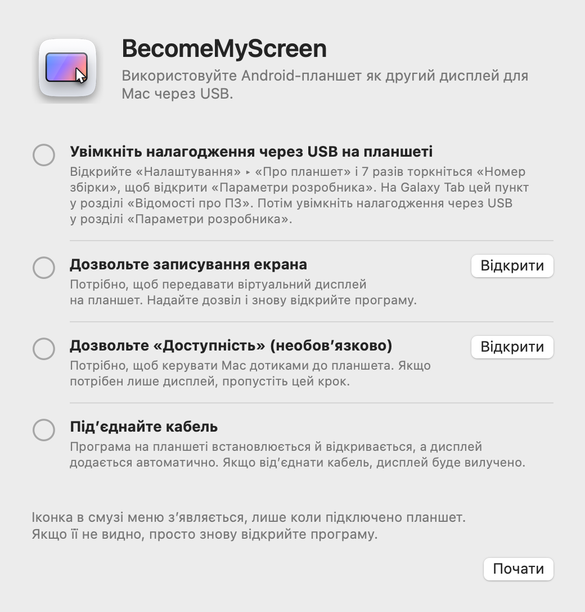
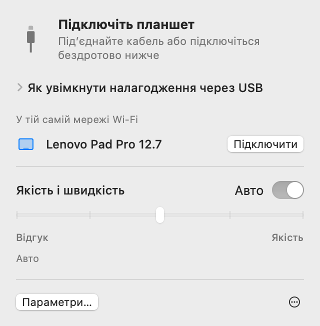
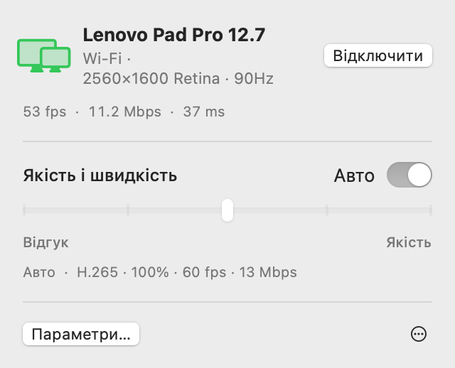
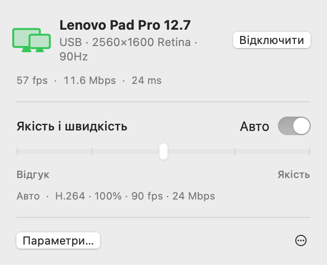
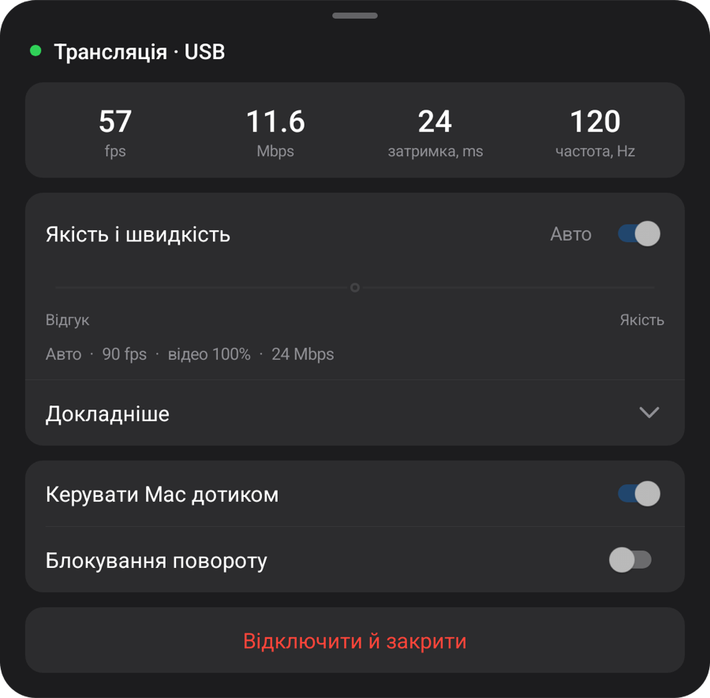
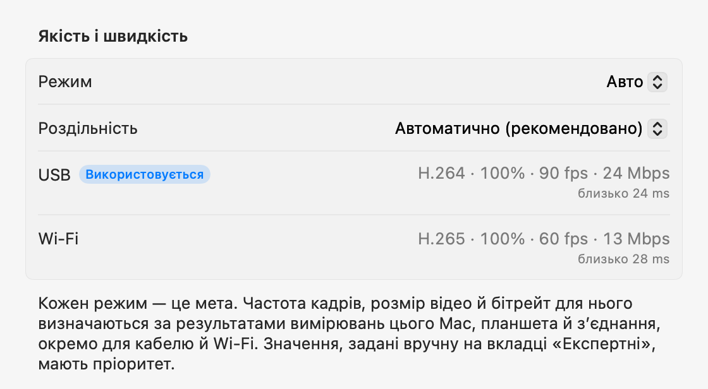

Android-планшет
як другий дисплей для Mac.
Під’єднайте USB-кабель — і планшет стане дисплеєм для Mac. Від’єднайте його, і екран продовжить працювати в тій самій мережі Wi‑Fi. Програма для Mac сама встановлює й відкриває програму на планшеті, а обліковий запис не потрібен.
Відкрийте ZIP-архів, перемістіть програму до папки «Програми» й відкрийте її. Про перше підключення — у розділі «Налаштування».
Ця програма для Mac. Відкрийте цю сторінку на Mac, щоб завантажити її.

Налаштування
Налаштування потрібне лише один раз. Після цього під’єднання кабелю додає дисплей, а в тій самій мережі Wi‑Fi підключення працює без кабелю.
-
Установіть програму для Mac
Відкрийте завантажений ZIP-архів, перемістіть BecomeMyScreen до папки «Програми» й відкрийте її. Дозвольте записування екрана, а потім відкрийте програму ще раз.
-
Увімкніть налагодження через USB на планшеті
Відкрийте «Налаштування» › «Про планшет» і сім разів торкніться «Номер збірки», щоб відкрити «Параметри розробника». На Galaxy Tab цей пункт у розділі «Відомості про ПЗ». Потім увімкніть налагодження через USB у розділі «Параметри розробника».
-
Під’єднайте кабель
Коли планшет запитає, чи дозволити налагодження через USB, позначте «Завжди дозволяти з цього комп’ютера» й торкніться «Дозволити». Mac установить і відкриє програму на планшеті, а потім додасть дисплей. Окремо завантажувати програму для планшета не потрібно.

Швидкість
Час від моменту, коли Mac захоплює екран, до моменту, коли планшет його відображає. Виміряно на Lenovo Pad Pro 12.7 і Mac з M4 Pro.
| Розмір відео | 60 fps | 120 fps |
|---|---|---|
| 100%2560×1600 | 20 ms | 24 ms |
| 75%1920×1200 | 14 ms | 19 ms |
| 50%1280×800 | 11 ms | 16 ms |
Апаратний кодер чипа Apple стискає зображення екрана в H.264 і передає його через USB, а апаратний декодер планшета відображає кожен кадр одразу після отримання. Під час першого підключення режим «Авто» вимірює, скільки може обробити декодер, і вибирає найвищу частоту кадрів без відставання. На цьому планшеті він вибрав 90 fps.
Як вимірювали: після поправки на різницю годинників двох пристроїв ми виміряли час між захопленням кадру на Mac і відображенням цього кадру на планшеті.
Бездротово
Планшет, який хоча б раз підключався через USB, працює й бездротово в тій самій мережі Wi‑Fi. Від’єднайте кабель під час роботи — екран продовжить працювати через Wi‑Fi.
- Підключення
- Відкрийте програму на планшеті, і він з’явиться в списку «У тій самій мережі Wi‑Fi» в смузі меню Mac. Натисніть «Підключити» — і з’явиться екран.
- Від’єднання кабелю
- Перехід на Wi‑Fi займає менше секунди. Віртуальний дисплей і розташування вікон зберігаються, а після повторного під’єднання кабелю робота повертається на USB.
- Безпека
- Ключ для бездротового підключення передається лише через USB-кабель. З’єднання встановлюється тільки після перевірки ключа, а зображення екрана й введення повністю шифруються за допомогою AES-256-GCM.
- Адаптивна подача кадрів
- Планшет підтверджує кожен отриманий кадр, а Mac пропускає стільки кадрів, на скільки відстав, і підлаштовує бітрейт. Навіть коли Wi‑Fi ненадовго сповільнюється, затримка не накопичується.


| Підключення | Затримка | Примітки |
|---|---|---|
| USB | Близько 20–25 ms | Максимальна частота кадрів планшета |
| Wi‑Fi 5 GHz | 40–55 ms | 60 fps; бітрейт автоматично зростає до значення, заданого налаштуванням якості |
| Wi‑Fi 2.4 GHz | 40–65 ms | Іноді затримка перевищує 100 ms, що може виглядати як смикання |
Виміряно на Lenovo Pad Pro 12.7 за 2560×1600 із зображенням, що постійно змінюється. Якщо планшет підключено до Wi‑Fi 2,4 GHz, програма запропонує перейти на 5 GHz.
Якість і відгук
Виберіть один із п’яти рівнів або залиште «Авто». Змінюйте налаштування в смузі меню Mac або в меню планшета — обидві сторони змінюються разом.
| Режим | Частота кадрів | Розмір відео | Бітрейт |
|---|---|---|---|
| Авто | 90 fps | 100% | 24 Mbps |
| 1Найшвидший відгук | 120 fps | 50% | 8 Mbps |
| 2Швидкий відгук | 120 fps | 75% | 14 Mbps |
| 3Баланс | 90 fps | 100% | 24 Mbps |
| 4Висока якість | 90 fps | 100% | 33 Mbps |
| 5Найкраща якість | 60 fps | 100% | 39 Mbps |
Виміряно на Lenovo Pad Pro 12.7 (2560×1600, 120 Hz), підключеному через USB до Mac з M4 Pro. Кожен режим — це мета: на іншому Mac чи планшеті, а також через Wi‑Fi його значення визначаються заново за результатами вимірювань. Режим «Авто» збігається з режимом «Баланс».
Розмір відео задається окремо від роздільності, яку бачить Mac. Зменшене відео однаково заповнює екран планшета, знижуючи навантаження на декодер і відповідно затримку.
Під час першого підключення програма приблизно за 10 секунд вимірює швидкість кабелю, відеокодера Mac і декодера планшета в усіх його режимах, а під час першого підключення через Wi‑Fi — швидкість мережі. Кожен режим підлаштовується під ці результати окремо для кабелю й Wi‑Fi, а на вкладці «Експертні» в параметрах можна вручну задати будь-яке значення для кожного підключення. Якщо кабель повільний, програма запропонує його замінити.



Дотик
Дотики до планшета Mac отримує як введення з миші. Функція вмикається, щойно ви дозволите «Доступність» на Mac.
| На планшеті | На Mac |
|---|---|
| Дотик | Клацання |
| Перетягування | Перетягування |
| Перетягування двома пальцями | Прокручування |
| Дотик двома пальцями | Клацання правою кнопкою |
| Дотик трьома пальцями | Відкриває меню планшета |
| Малювання стилусом | Надходить на Mac як введення з графічного планшета, із силою натиску й нахилом |
| Наведення стилуса або миші на екран | Переміщує курсор. Дотик з натиснутою кнопкою стилуса — клацання правою кнопкою |
Курсор повертається на місце
Коли ви торкаєтеся планшета, курсор Mac переміщується в цю точку. Якщо потім трохи посунути мишу, курсор повернеться туди, де був до дотику, — не доведеться тягнути його назад до того, чим ви займалися на основному дисплеї. Цю функцію можна вимкнути в параметрах.
Подробиці
- Іконка в смузі меню
-
Вона з’являється, лише коли підключено планшет. Якщо іконку приховано, знову відкрийте програму — вона ненадовго з’явиться з відкритою панеллю.
- Очікування
- Підготовка
- Використовується
- Потребує уваги
- Відкриття програми на планшеті
- Якщо під час під’єднання кабелю програма на планшеті не запущена, Mac відкриє її та ввімкне екран, якщо він вимкнений. Екран блокування при цьому ніколи не обходиться.
- Оновлення
- Програма для Mac перевіряє нові версії й оновлюється, коли ви вирішите. Якщо в ній є новіша програма для планшета, планшет оновлюється через кабель до запуску дисплея.
- Книжкова орієнтація
- Поверніть планшет вертикально, і віртуальний дисплей теж буде створено заново в книжковій орієнтації.
- Частота оновлення й вимкнення екрана
- Під час трансляції частота оновлення планшета утримується, щоб не падати до 60 Hz, і екран не вимикається.
- Перевірка кабелю
- Якщо USB підключається на швидкості нижче 480 Mbps, передавання не перевищує 8 MB/s або з’єднання розривається тричі за три хвилини, програма запропонує спробувати інший кабель чи порт.
- Коли з’єднання розривається
- Якщо кабель випав, екран продовжить працювати через Wi‑Fi. Якщо продовжити бездротово не вдається, віртуальний дисплей деякий час зберігається, і якщо планшет за цей час підключиться знову, розташування вікон залишиться таким, як було.
- «Відключити» й «Підключити знову»
- Натисніть «Відключити» в смузі меню, і показ на планшеті призупиниться, навіть якщо кабель під’єднано. Щоб продовжити, натисніть «Підключити знову».
- Програма на планшеті закривається сама
- Якщо до планшета нічого не під’єднано, навіть зарядного пристрою, програма на планшеті сама закриється через 10 секунд. Якщо натомість можна чекати бездротового підключення, вона чекає 2 хвилини.
Вимоги
- Mac
- Mac із чипом Apple, macOS 14 або новіша
- Планшет
- Android 8.0 або новіша версія, на пристрої, де можна ввімкнути налагодження через USB
- Кабель
- USB-кабель із підтримкою передавання даних. Кабелі лише для заряджання не підключаться. Порт на самому Mac надійніший, ніж концентратор.
- Бездротово
- Mac і планшет мають бути в одній мережі Wi‑Fi; рекомендовано 5 GHz. Перше підключення має бути через USB.
- Дозволи на Mac
- Записування екрана. Також «Доступність» — щоб керувати Mac дотиком, і «Локальна мережа» — щоб працювати бездротово.
Поширені запитання
Чи потрібно встановлювати програму на планшет?
Ні. Програма для планшета входить до програми для Mac, тому під час під’єднання кабелю Mac сам установить і відкриє її. Після оновлення програми для Mac програма на планшеті оновиться разом із нею під час наступного підключення.
Чи працює через Wi‑Fi?
Так. Після одного підключення через USB надалі можна підключатися бездротово в тій самій мережі Wi‑Fi. Відкрийте програму на планшеті й натисніть «Підключити» в смузі меню Mac або просто від’єднайте кабель під час роботи. Затримка трохи вища, ніж через USB (40–55 ms у мережі 5 GHz), а у Wi‑Fi 2,4 GHz зображення іноді смикається, тому рекомендовано 5 GHz.
Чому перше підключення має бути через USB?
Тому що ключ для бездротового підключення передається лише через кабель. Так жоден інший пристрій у тій самій мережі Wi‑Fi не зможе видати себе за ваш планшет і підключитися до вашого Mac. Заодно в цей момент на планшет установлюється програма.
Чи працює сила натиску стилуса?
Так. Сила натиску й нахил стилуса надходять у macOS як введення з графічного планшета (натиск, нахил і наближення). Використовується стандартне введення стилусом Android, тому для S Pen і стилусів Lenovo не потрібні додаткові SDK чи драйвери. Перевірено зі стилусом для Lenovo Pad Pro 12.7.
З якими планшетами це працює?
З будь-яким планшетом з Android 8.0 або новішою версією, де можна ввімкнути налагодження через USB. Розробку й вимірювання виконано на Lenovo Pad Pro 12.7 (2944×1840, 120 Hz); інші пристрої поки особисто не перевірялися. Роздільність і орієнтація віртуального дисплея під час підключення відповідають екрану планшета.
Чому програми немає в App Store?
Для створення віртуального дисплея використовується закрита функція macOS, тому програму не можна опублікувати в App Store. Натомість її підписано сертифікатом розробника Apple і нотаризовано Apple, тому вона відкривається одразу після завантаження.
Навіщо потрібні записування екрана й «Доступність»?
Записування екрана захоплює віртуальний дисплей для передавання на планшет, «Доступність» перетворює дотики й стилус планшета на введення на Mac, а «Локальна мережа» потрібна, щоб знаходити планшети в тій самій мережі Wi‑Fi. Зображення екрана передається лише через USB-кабель або в межах вашої мережі Wi‑Fi (у разі бездротового підключення — у зашифрованому вигляді) і ніколи не потрапляє в інтернет.
З’єднання постійно розривається.
Спробуйте інший кабель із підтримкою передавання даних або під’єднайте його безпосередньо до порту Mac, а не до концентратора. Програма заздалегідь повідомить, якщо USB підключається повільно або часто розривається. Після короткого розриву віртуальний дисплей зберігається 15 секунд і робота продовжується з того самого місця.
Що, якщо планшет заблоковано?
Mac увімкне екран і відкриє програму, але ніколи не обходить блокування. Розблокуйте планшет PIN-кодом або графічним ключем, і підключення відбудеться одразу.
Чи працює на Mac із процесором Intel?
Поточна версія призначена лише для Mac із чипом Apple.
Завантаження
Ця програма для Mac. Відкрийте цю сторінку на Mac, щоб завантажити її.
Відкрийте ZIP-архів, перемістіть програму до папки «Програми» й відкрийте її. Про перше підключення — у розділі «Налаштування».